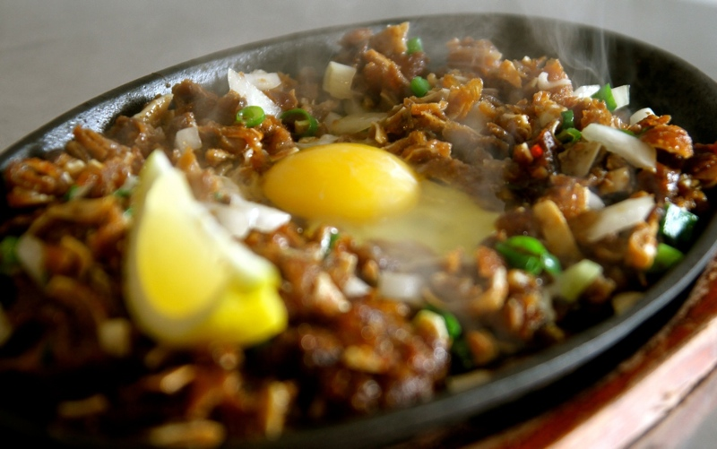

Sisig

Description
Sisig is a Filipino dish made from parts of a pig's face and belly, and chicken liver which is usually seasoned with calamansi, onions, and chili peppers.
It originates from the Pampanga region in Luzon.
- 2 1/4 pounds pig's ears, cut into thin slices
- 3/4 cup water
- 1/3 cup white vinegar
- 2 tablespoons white sugar
- 1 teaspoon salt
- 1/4 teaspoon ground black pepper
- 1 green bell pepper, cut into thin strips
- 1 red bell pepper, cut into thin strips
- 1 large green chile pepper, seeded and sliced